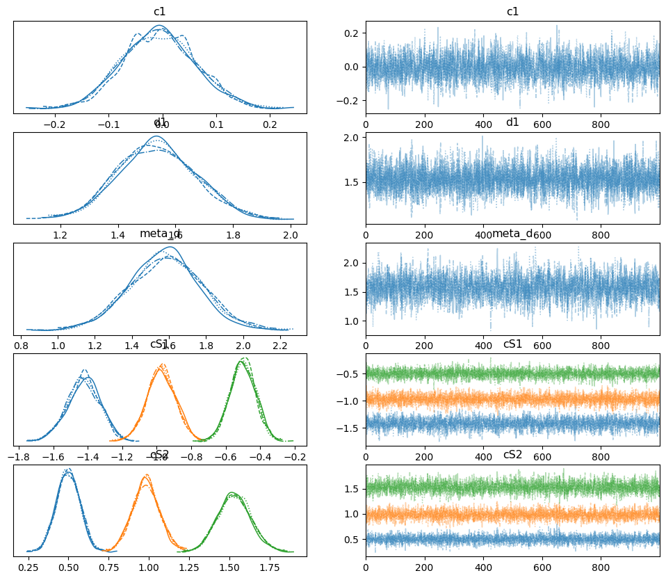

Fitting data at the subject level#
Author: Nicolas Legrand nicolas.legrand@cfin.au.dk
import arviz as az
import numpy as np
from metadpy.bayesian import hmetad
From response-signal arrays#
# Create responses data
nR_S1 = np.array([52, 32, 35, 37, 26, 12, 4, 2])
nR_S2 = np.array([2, 5, 15, 22, 33, 38, 40, 45])
This function will return two variable. The first one is a pymc model variable
model, traces = hmetad(nR_S1=nR_S1, nR_S2=nR_S2)
Auto-assigning NUTS sampler...
Initializing NUTS using jitter+adapt_diag...
Sequential sampling (4 chains in 1 job)
NUTS: [c1, d1, meta_d, cS1_hn, cS2_hn]
100.00% [2000/2000 00:11<00:00 Sampling chain 0, 0 divergences]
100.00% [2000/2000 00:11<00:00 Sampling chain 1, 0 divergences]
100.00% [2000/2000 00:10<00:00 Sampling chain 2, 0 divergences]
100.00% [2000/2000 00:11<00:00 Sampling chain 3, 0 divergences]
Sampling 4 chains for 1_000 tune and 1_000 draw iterations (4_000 + 4_000 draws total) took 46 seconds.
az.plot_trace(traces, var_names=["c1", "d1", "meta_d", "cS1", "cS2"]);

az.summary(traces, var_names=["c1", "d1", "meta_d", "cS1", "cS2"])
| mean | sd | hdi_3% | hdi_97% | mcse_mean | mcse_sd | ess_bulk | ess_tail | r_hat | |
|---|---|---|---|---|---|---|---|---|---|
| c1 | -0.006 | 0.069 | -0.137 | 0.121 | 0.001 | 0.001 | 2891.0 | 3332.0 | 1.0 |
| d1 | 1.536 | 0.137 | 1.284 | 1.797 | 0.002 | 0.001 | 4714.0 | 2949.0 | 1.0 |
| meta_d | 1.580 | 0.197 | 1.215 | 1.963 | 0.004 | 0.003 | 2723.0 | 2876.0 | 1.0 |
| cS1[0] | -1.424 | 0.096 | -1.613 | -1.253 | 0.002 | 0.001 | 3143.0 | 3147.0 | 1.0 |
| cS1[1] | -0.974 | 0.083 | -1.133 | -0.820 | 0.001 | 0.001 | 3273.0 | 2871.0 | 1.0 |
| cS1[2] | -0.501 | 0.074 | -0.636 | -0.361 | 0.001 | 0.001 | 4256.0 | 3161.0 | 1.0 |
| cS2[0] | 0.498 | 0.073 | 0.365 | 0.634 | 0.001 | 0.001 | 4086.0 | 3337.0 | 1.0 |
| cS2[1] | 0.982 | 0.085 | 0.813 | 1.134 | 0.001 | 0.001 | 3316.0 | 3103.0 | 1.0 |
| cS2[2] | 1.530 | 0.103 | 1.337 | 1.720 | 0.002 | 0.001 | 3231.0 | 3184.0 | 1.0 |
Watermark#
%load_ext watermark
%watermark -n -u -v -iv -w -p metadpy,pytensor,pymc
---------------------------------------------------------------------------
ModuleNotFoundError Traceback (most recent call last)
Cell In[6], line 1
----> 1 get_ipython().run_line_magic('load_ext', 'watermark')
2 get_ipython().run_line_magic('watermark', '-n -u -v -iv -w -p metadpy,pytensor,pymc')
File /opt/hostedtoolcache/Python/3.9.16/x64/lib/python3.9/site-packages/IPython/core/interactiveshell.py:2369, in InteractiveShell.run_line_magic(self, magic_name, line, _stack_depth)
2367 kwargs['local_ns'] = self.get_local_scope(stack_depth)
2368 with self.builtin_trap:
-> 2369 result = fn(*args, **kwargs)
2370 return result
File /opt/hostedtoolcache/Python/3.9.16/x64/lib/python3.9/site-packages/IPython/core/magics/extension.py:33, in ExtensionMagics.load_ext(self, module_str)
31 if not module_str:
32 raise UsageError('Missing module name.')
---> 33 res = self.shell.extension_manager.load_extension(module_str)
35 if res == 'already loaded':
36 print("The %s extension is already loaded. To reload it, use:" % module_str)
File /opt/hostedtoolcache/Python/3.9.16/x64/lib/python3.9/site-packages/IPython/core/extensions.py:76, in ExtensionManager.load_extension(self, module_str)
69 """Load an IPython extension by its module name.
70
71 Returns the string "already loaded" if the extension is already loaded,
72 "no load function" if the module doesn't have a load_ipython_extension
73 function, or None if it succeeded.
74 """
75 try:
---> 76 return self._load_extension(module_str)
77 except ModuleNotFoundError:
78 if module_str in BUILTINS_EXTS:
File /opt/hostedtoolcache/Python/3.9.16/x64/lib/python3.9/site-packages/IPython/core/extensions.py:91, in ExtensionManager._load_extension(self, module_str)
89 with self.shell.builtin_trap:
90 if module_str not in sys.modules:
---> 91 mod = import_module(module_str)
92 mod = sys.modules[module_str]
93 if self._call_load_ipython_extension(mod):
File /opt/hostedtoolcache/Python/3.9.16/x64/lib/python3.9/importlib/__init__.py:127, in import_module(name, package)
125 break
126 level += 1
--> 127 return _bootstrap._gcd_import(name[level:], package, level)
File <frozen importlib._bootstrap>:1030, in _gcd_import(name, package, level)
File <frozen importlib._bootstrap>:1007, in _find_and_load(name, import_)
File <frozen importlib._bootstrap>:984, in _find_and_load_unlocked(name, import_)
ModuleNotFoundError: No module named 'watermark'